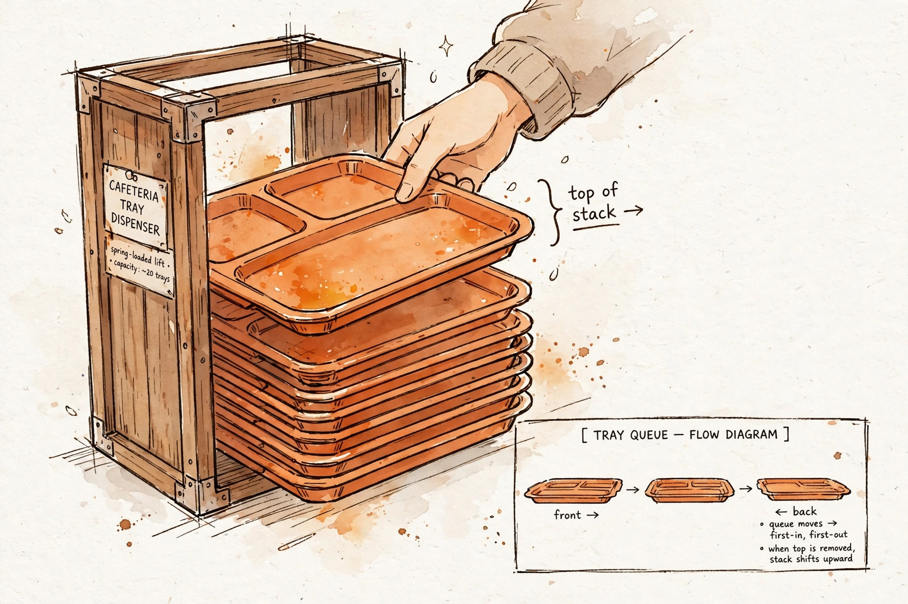

Thursday, October 1, 2026
Stacks and queues are a discipline, not a data structure. A Python list
already is a stack — but it is not a queue, and the cost of forgetting that is
the #1 hidden-quadratic trap in Python interviews. This lesson derives why, meets
collections.deque, and solves valid parentheses.

Builds on: L1 (Arrays: The Foundation) — the exact idea reused
is the doubling argument: n appends cost ~2n total, so appends at the end of a list are
amortized O(1). That argument now explains why a list makes a perfect stack — and why the same
list is a terrible queue. L3 (Linked lists) — the reused idea is that constant-time access at
both ends needs a two-ended structure, which is exactly what
collections.deque is under the hood: a doubly-linked list of blocks. L7's
complexity vocabulary prices every claim below.
A stack is a cafeteria tray dispenser, an undo history, a browser back button. You only ever touch the top. Last in, first out.
A queue is a checkout line, a printer spool, an ER waiting room. You arrive at the back, you leave from the front. First in, first out.
A deque (double-ended queue, pronounced "deck") does both: add and remove at either end.
The punchline up front: stacks and queues are a discipline, not a data structure. In
Python, a plain list is a stack — but it is not a
queue. Understanding why is understanding the machine underneath your code.
A list is a stack. append and pop() touch only the
end of the list. End-append is amortized O(1) thanks to L1's doubling — n appends cost ~2n total
machine operations, so each costs O(1) on average. The top of the stack is
s[-1]. No import needed, no ceremony: every Python list already implements the
stack discipline.
Why a list fails as a queue: pop(0) must shift every remaining
element one slot left. In a contiguous array that is n−1 machine-word moves in a single
memmove — Θ(n) per dequeue. The same holds for insert(0, x), which
shifts everything right to make room.
The derivation is one line of algebra: the first dequeue shifts n−1 elements, the second n−2, and so on down to the last dequeue shifting nothing. The sum of 1 + 2 + … + n is n(n+1)/2. Keep that sum in your pocket — it is the signature of the hidden-quadratic.
Concrete: 100,000 enqueues + dequeues via list.pop(0) ≈
5×10⁹ word moves — seconds to TLE in CPython. Via deque.popleft() ≈ 100k
constant-time ops — milliseconds. That gap is the difference between AC and TLE, and it is
the classic hidden-cost interview trap.
CPython's collections.deque is a doubly-linked list of blocks
— each block holds up to 64 pointers. append/appendleft fill the
tail/head block or allocate a new one; pop/popleft do the reverse.
All O(1), no shifting ever — this is L3's pointer surgery scaled up: constant-time work at
both ends because nothing ever has to move.
The tradeoff is per-block allocation overhead. A deque of 3 elements can occupy a full
64-slot block, and indexing d[i] is O(1) but slower than a list's — a block hop,
not pointer arithmetic. Don't reach for a deque when you need random access; reach for it when
the workload lives at the ends.
Spaced retrieval, two for one: L1's doubling recap explains the list-as-stack, and L7's Big-O-as-growth-rate lens is exactly what let us price Θ(n²) against Θ(n) and see that the choice of which end you touch is a complexity decision, not a style preference.
"Given a string containing just the characters ()[]{} determine if the input string is valid." Why it's canonical: nesting is a stack — each closer must match the most recent unmatched opener, which is precisely LIFO.
def isValid(s: str) -> bool:
pairs = {')': '(', ']': '[', '}': '{'} # closer -> expected opener
stack: list[str] = []
for ch in s:
if ch in pairs: # a closing bracket
if not stack or stack.pop() != pairs[ch]:
return False # mismatch, or nothing to match
else:
stack.append(ch) # opener goes on the stack
return not stack # valid only if nothing is left over
Complexity: each character is pushed at most once and popped at most once
→ 2n stack ops → O(n) time. Worst case the stack holds all n openers →
O(n) space (e.g. "((((…").
Walkthrough on "([])": push (, push
[, see ] → pop [ ✓, see ) → pop
( ✓, stack empty → True. On "([)]": push (, push
[, see ) → pop [ ✗ mismatch → False.
list.pop(0) / list.insert(0, x) in a loop — hidden
O(n) per op → O(n²) total. The #1 Python interview trap; use
deque.popleft()."](" crashes on
stack.pop() if you don't guard if not stack."(((" is invalid;
return not stack catches it.RecursionError. An explicit stack is the
fix (previews L8 Recursion).queue.Queue is for threads, not interviews — it's
lock-guarded and slower; in coding rounds use collections.deque.Follow-up teaser (interview-grade): LeetCode 232,
Implement Queue using Stacks: two stacks; push to in, pop/peek from
out, transfer only when out is empty. Each element moves at most
twice → amortized O(1) per operation. Mention it by name in the round —
interviewers read that as depth.
L20 (Monotonic stacks & deque patterns) — this lesson's machinery weaponized: next-greater-element, sliding-window maximum via deque. L32 (BFS/DFS) — the queue is the BFS frontier; the stack is iterative DFS. Today's discipline becomes tomorrow's traversal. L8 (Recursion) — the call stack is literally a stack; today's LIFO discipline explains the call-stack mechanism. L23 (Design: LRU cache) — a doubly-linked list + hash map: the deque idea (O(1) at both ends) upgraded into a design problem.
— The Infra Notebook